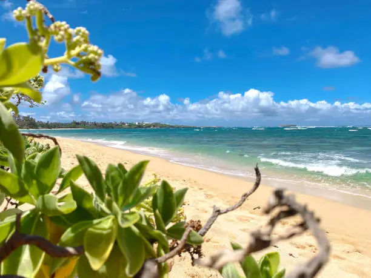
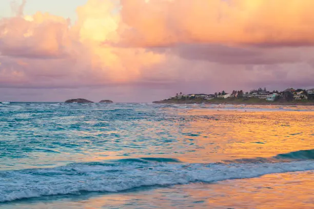

Hukilau Beach
Hukilau Beach is a beloved local gem in Laie, famous for its calm waters and rich cultural history. The beach gets its name from the traditional Hawaiian fishing practice called hukilau, where the whole community would gather to pull in fishing nets together — a true symbol of aloha spirit.

